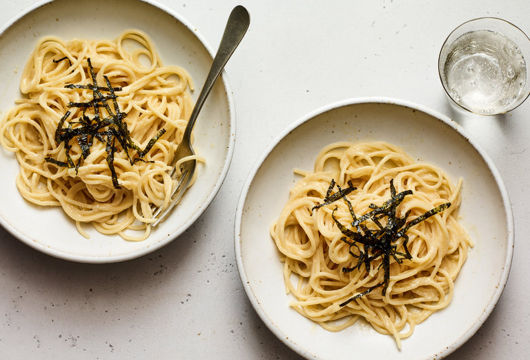

Five-Ingredient Creamy Miso Pasta

Description
This one-pot pasta comes together in minutes, and requires zero prep and minimal cleanup. It builds on the classic combination of pasta, butter and cheese with a spoonful of miso paste for complexity. But you could experiment with using any other condiments or spices you have on hand, such as red pesto, curry paste or ground turmeric in place of the miso. To achieve a silky smooth pasta, you’ll need to put your cacio e pepe skills to work: Vigorously toss the pasta, grated cheese and pasta water together to achieve a properly emulsified sauce. Top with shrimp, edamame, frozen peas or any steamed vegetable. The optional nori or furikake imparts an unexpected flavor of the sea, and it’s worth using if you have it on hand.
Ingredients
- Kosher salt
- 16 ounces spaghetti, linguine or bucatini
- 6 tablespoons unsalted butter
- 3 tablespoons white (or red) miso
- 4 ounces Parmesan, finely grated (1 packed cup)
- Kizami nori, furikake or thinly sliced seaweed snacks, for garnish (optional)
Steps
- Bring a large pot of salted water to a boil. Add the pasta and cook, stirring occasionally, until al dente. Reserve 1½ cups pasta water, then drain the pasta.
- Add the butter, miso and 1¼ cups pasta water to the pot and whisk over medium heat until miso breaks down and liquid is uniform, 1 to 2 minutes. Add the pasta and Parmesan and cook, stirring vigorously with tongs until cheese is melted and sauce emulsifies. (The key word here is “vigorously.” To achieve a silky smooth pasta instead of a gloppy one, put your cacio e pepe skills to work.)
- Divide among shallow bowls and sprinkle with nori or furikake, if using.